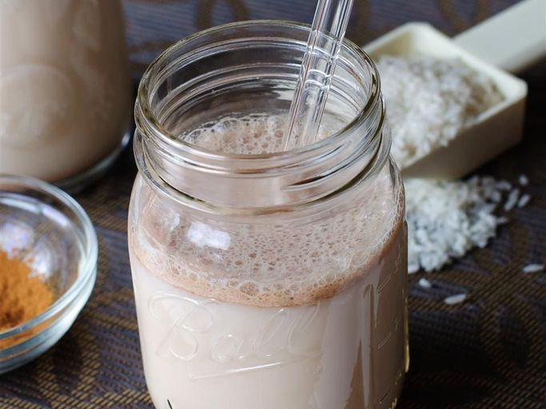

Horchata Recipe

Description
Horchata (a.k.a. orxata) is a sweet Latin American drink made from white rice.
There are many kinds of horchata, including the cinnamon-spiced Mexican variety.
The creamy beverage is served chilled over ice.
Ingredients
- 5 cups water
- 1 cup uncooked white long-grain rice
- ⅔ cup white sugar
- ½ cup milk
- ½ tablespoon vanilla extract
- ½ tablespoon ground cinnamon
Steps
-
Pour water and rice into a blender; mix until rice begins to break up, about 1 minute.
Let rice and water stand at room temperature for at least 3 hours.
-
Strain rice water into a pitcher and discard rice.
Stir in sugar, milk, vanilla, and cinnamon.
- Chill thoroughly before serving over ice